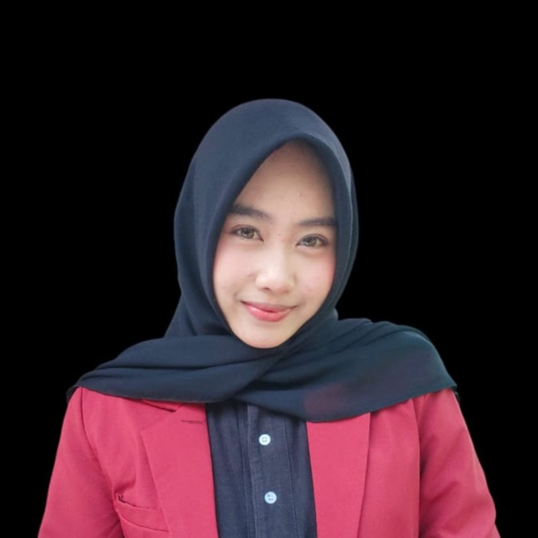
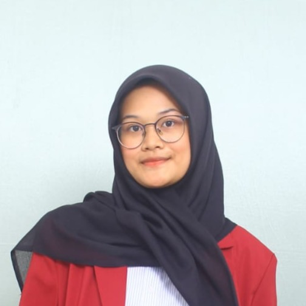
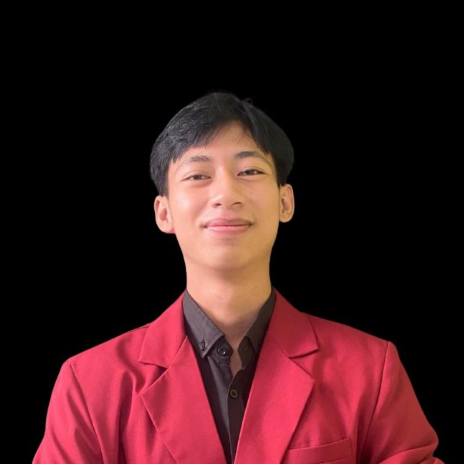
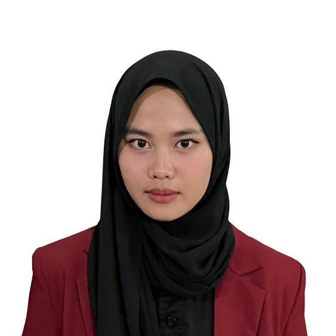
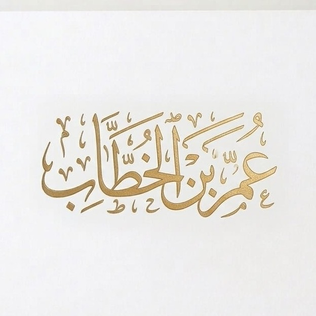
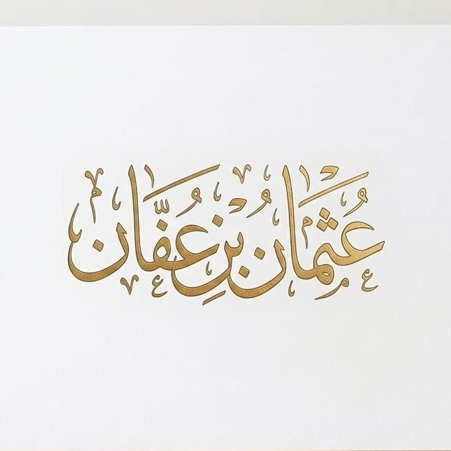
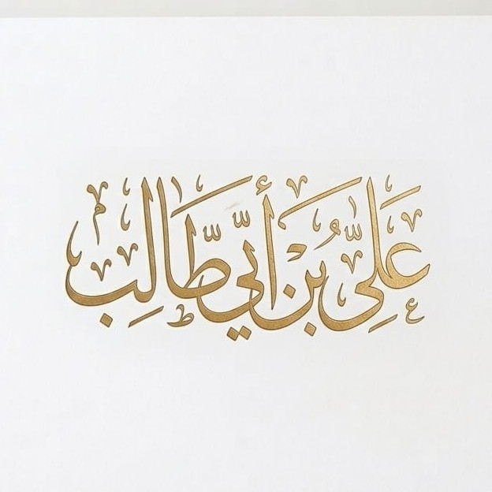

Halo Penjelajah Cilik!
Selamat datang di KHALIFA. Persiapkan dirimu untuk menelusuri jejak 4 pemimpin Islam terhebat dengan cara yang menyenangkan!

Materi Terstruktur
Modul interaktif yang disesuaikan khusus untuk SD.
6 Mode Bermain
Uji pemahamanmu dengan kuis, duel, tebak gelar, deduksi, hingga menyortir fakta!
Lemari Trofi Penjelajah
Selesaikan misi di Peta dan Ujian Akhir untuk mengumpulkan semua lencana keren ini!
Capaian & Tujuan
Capaian Pembelajaran
Sejarah Peradaban Islam: Memahami kisah Nabi Muhammad saw. periode Madinah dan khulafaurasyidin.
Tujuan Pembelajaran
- Peserta didik mampu menyebutkan latar belakang kehidupan Abu Bakar Ash-Shiddiq, Umar bin Khattab, Utsman bin Affan, dan Ali bin Abi Thalib dengan benar.
- Peserta didik mampu menjelaskan proses masuknya Islam dan peran para Khulafaur Rasyidin dalam dakwah Islam.
- Peserta didik mampu mengidentifikasi kebijakan dan peristiwa penting pada masa pemerintahan Khulafaur Rasyidin.
- Peserta didik mampu membedakan karakter kepemimpinan Abu Bakar, Umar, Utsman, dan Ali.
- Peserta didik mampu menunjukkan sikap keteladanan para Khulafaur Rasyidin dalam kehidupan sehari-hari.
Petunjuk Penggunaan
Langkah 1: Buka Peta
Masuk ke menu "Peta Ekspedisi" untuk melihat alur belajar tokoh sejarah.Langkah 2: Pilih Pin Tokoh
Klik pada PIN Peta tokoh (berurutan dari Abu Bakar) untuk membuka materi cerita interaktif.Langkah 3: Kuis Latihan
Di akhir setiap halaman materi tokoh, kerjakan 10 soal kuis pilihan ganda.Langkah 4: Ujian Akhir
Setelah dipelajari, masuklah ke Ujian Akhir untuk bermain 6 Mode Game Interaktif.Sumber Referensi
Materi dalam website ini disusun berdasarkan sumber yang valid dan terpercaya untuk anak Sekolah Dasar:
- Subarman, M. (2015). Sejarah Kelahiran, Perkembangan dan Masa Keemasan Peradaban Islam. Deepublish.
- Dalimunthe, L. A. (2024). Peradaban Islam Masa Khalifah Utsman bin Affan (24-36 H/644-656 M). Al-Murabbi Jurnal Pendidikan Islam, 2(1), 204-215.
- Sulaiman, S. (2018). Kepemimpinan Abu Bakar Ash-Shiddiq dalam Perspektif Sejarah Islam. Jurnal Sejarah Peradaban Islam, 2(1), 1–12.
- Hidayat, R. (2020). Peran Abu Bakar Ash-Shiddiq dalam Mempertahankan Keutuhan Umat Islam Pasca Wafat Nabi. Jurnal Tamaddun: Sejarah dan Kebudayaan Islam, 8(2), 115–126.
- Suryana, Y. (2019). Kepemimpinan Khalifah Ali bin Abi Thalib pada Masa Konflik Politik Islam Awal. Jurnal Khazanah: Studi Islam dan Humaniora, 17(2), 159–172.
- Rahman, M. (2021). Ali bin Abi Thalib dan Dinamika Politik pada Masa Khulafaur Rasyidin. Jurnal Tsaqafah, 17(1), 45–60.
Tim Pengembang KHALIFA
Platform ini dikembangkan oleh Mahasiswa Universitas Pendidikan Indonesia.





Apa itu Khulafaur Rasyidin?
Khulafaur Rasyidin adalah para pemimpin Islam yang menggantikan Nabi Muhammad saw. setelah beliau wafat.
Tugas mereka adalah melanjutkan kepemimpinan dalam mengatur kehidupan umat Islam, namun mereka tidak menggantikan tugas Nabi sebagai rasul.
Peta Ekspedisi
Klik pin tokoh di bawah ini untuk menggali peti harta ilmu mereka!




Ujian Evaluasi & 6 Mode Game
Kuis Mandiri
Latihan 10 soal pilihan ganda acak.
Adu Tanding 1v1
Berkompetisi menjawab cepat bersama teman.
Tarik Gelar
Pasangkan nama dengan gelar kebesarannya.
Susun Sejarah
Geser nama khalifah agar sesuai urutan kronologi.
Detektif Gurun
Analisis petunjuk dan tebak siapa tokoh misteriusnya!
Master Sortir
Kelompokkan fakta dan prestasi ke tokoh yang tepat.
Gunakan tombol ini jika ingin mengulang semua skor dan lencana dari nol.